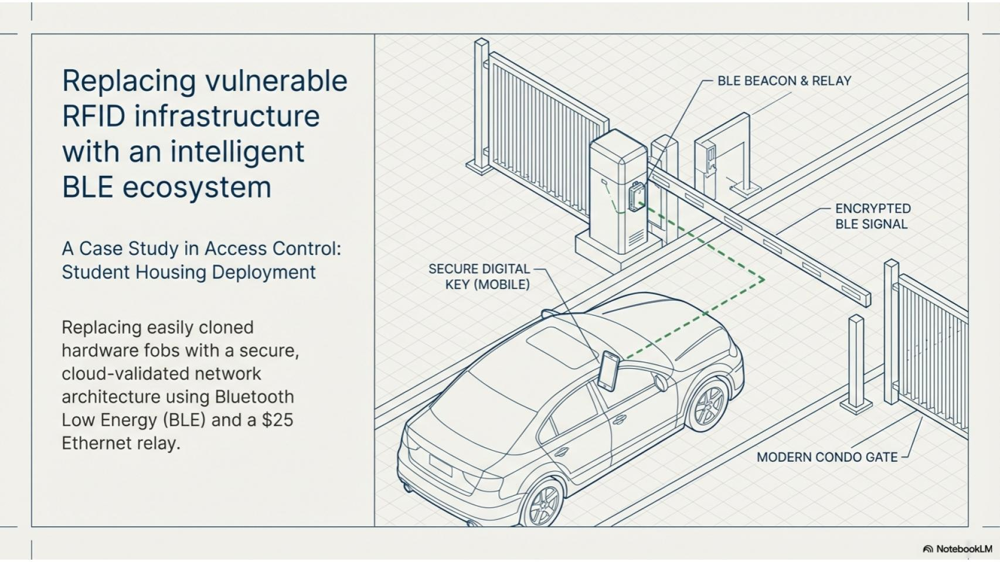

01
BLE-Enabled Smart Parking Access Solution
This case study was the solution I proposed to meet the client requirements. The goal was to replace costly, physical RFID credentials with a scalable digital system. The architecture needed to ensure real-time validation of user status for thousands of concurrent students and faculty members while maintaining zero-latency access.
#GoogleNotebookLM #BLE #ethernet #relay #beacon #accesscontrol